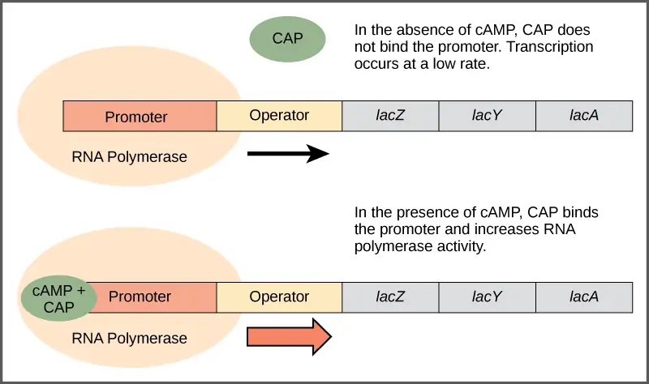
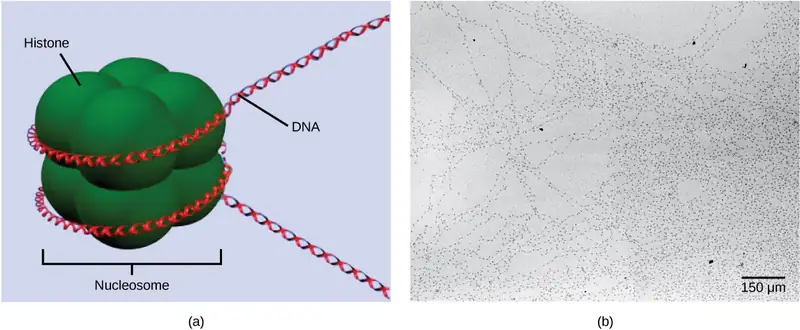
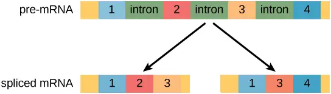
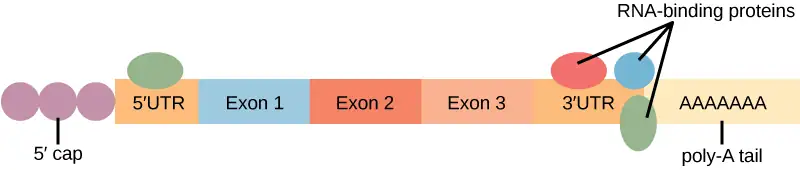
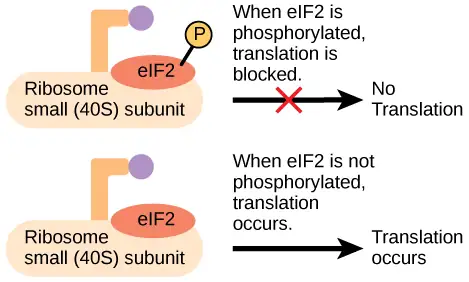
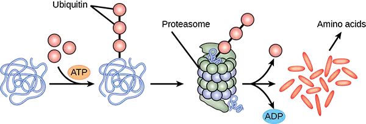
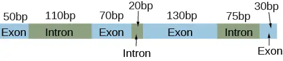

Chapter 16: Gene Expression¶
Introduction¶
Each somatic cell in the body generally contains the same DNA. A few exceptions include red blood cells, which contain no DNA in their mature state, and some immune system cells that rearrange their DNA while producing antibodies. In general, however, the genes that determine whether you have green eyes, brown hair, and how fast you metabolize food are the same in the cells in your eyes and your liver, even though these organs function quite differently. If each cell has the same DNA, how is it that cells or organs are different? Why do cells in the eye differ so dramatically from cells in the liver?
Whereas each cell shares the same genome and DNA sequence, each cell does not turn on, or express, the same set of genes. Each cell type needs a different set of proteins to perform its function. Therefore, only a small subset of proteins is expressed in a cell. For the proteins to be expressed, the DNA must be transcribed into RNA and the RNA must be translated into protein. In a given cell type, not all genes encoded in the DNA are transcribed into RNA or translated into protein because specific cells in our body have specific functions. Specialized proteins that make up the eye (iris, lens, and cornea) are only expressed in the eye, whereas the specialized proteins in the heart (pacemaker cells, heart muscle, and valves) are only expressed in the heart. At any given time, only a subset of all of the genes encoded by our DNA are expressed and translated into proteins. The expression of specific genes is a highly regulated process with many levels and stages of control. This complexity ensures the proper expression in the proper cell at the proper time.
16.1 Regulation of Gene Expression¶
Learning Objectives
By the end of this section, you will be able to do the following:
- Discuss why every cell does not express all of its genes all of the time
- Describe how prokaryotic gene regulation occurs at the transcriptional level
- Discuss how eukaryotic gene regulation occurs at the epigenetic, transcriptional, post-transcriptional, translational, and post-translational levels
For a cell to function properly, necessary proteins must be synthesized at the proper time and place. All cells control or regulate the synthesis of proteins from information encoded in their DNA. The process of turning on a gene to produce RNA and protein is called gene expression. Whether in a simple unicellular organism or a complex multi-cellular organism, each cell controls when and how its genes are expressed. For this to occur, there must be internal chemical mechanisms that control when a gene is expressed to make RNA and protein, how much of the protein is made, and when it is time to stop making that protein because it is no longer needed.
The regulation of gene expression conserves energy and space. It would require a significant amount of energy for an organism to express every gene at all times, so it is more energy efficient to turn on the genes only when they are required. In addition, only expressing a subset of genes in each cell saves space because DNA must be unwound from its tightly coiled structure to transcribe and translate the DNA. Cells would have to be enormous if every protein were expressed in every cell all the time.
The control of gene expression is extremely complex. Malfunctions in this process are detrimental to the cell and can lead to the development of many diseases, including cancer.
Prokaryotic versus Eukaryotic Gene Expression¶
To understand how gene expression is regulated, we must first understand how a gene codes for a functional protein in a cell. The process occurs in both prokaryotic and eukaryotic cells, just in slightly different manners.
Prokaryotic organisms are single-celled organisms that lack a cell nucleus, and their DNA therefore floats freely in the cell cytoplasm. To synthesize a protein, the processes of transcription and translation occur almost simultaneously. When the resulting protein is no longer needed, transcription stops. As a result, the primary method to control what type of protein and how much of each protein is expressed in a prokaryotic cell is the regulation of DNA transcription. All of the subsequent steps occur automatically. When more protein is required, more transcription occurs. Therefore, in prokaryotic cells, the control of gene expression is mostly at the transcriptional level.
Eukaryotic cells, in contrast, have intracellular organelles that add to their complexity. In eukaryotic cells, the DNA is contained inside the cell’s nucleus and there it is transcribed into RNA. The newly synthesized RNA is then transported out of the nucleus into the cytoplasm, where ribosomes translate the RNA into protein. The processes of transcription and translation are physically separated by the nuclear membrane; transcription occurs only within the nucleus, and translation occurs only outside the nucleus in the cytoplasm. The regulation of gene expression can occur at all stages of the process (Figure 16.3). Regulation may occur when the DNA is uncoiled and loosened from nucleosomes to bind transcription factors (epigenetic level), when the RNA is transcribed (transcriptional level), when the RNA is processed and exported to the cytoplasm after it is transcribed (post-transcriptional level), when the RNA is translated into protein (translational level), or after the protein has been made (post-translational level).
![A cell diagram is shown. A signal leads to chromatin unpacking through histone acetylation, DNA methylation, which triggers DNA transcription, RNA processing by adding 5’ cap, poly A tail, and splicing of introns and exons, and m R N A to leaving the nucleus and entering the cytoplasm. In the cytoplasm, translation occurs, leading to formation of a polypeptide, its processing and modification to produce protein’s functional form, transport to designated cellular and extracellular destinations, eventual degradation of both the mRNA and the protein.](img/generegulation.webp)
![Prokaryotic cells do not have a nucleus, and D N A is located in the cytoplasm. Ribosomes attach to the m R N A as it is being transcribed from D N A. Thus, transcription and translation occur simultaneously. In eukaryotic cells, the D N A is located in the nucleus, and ribosomes are located in the cytoplasm. After being transcribed, pre m R N A is processed in the nucleus to make the mature mRNA, which is then exported to the cytoplasm where ribosomes become associated with it and translation begins.](img/figure-16-01-01-9c0a.webp)
The differences in the regulation of gene expression between prokaryotes and eukaryotes are summarized in Table 16.1. The regulation of gene expression is discussed in detail in subsequent modules.
Table 16.1
| Differences in the Regulation of Gene Expression of Prokaryotic and Eukaryotic Organisms | |
|---|---|
| Prokaryotic organisms | Eukaryotic organisms |
| Lack a membrane-bound nucleus | Contain nucleus |
| DNA is found in the cytoplasm | DNA is confined to the nuclear compartment |
| RNA transcription and protein formation occur almost simultaneously | RNA transcription occurs prior to protein formation, and it takes place in the nucleus. Translation of RNA to protein occurs in the cytoplasm. |
| Gene expression is regulated primarily at the transcriptional level | Gene expression is regulated at many levels (epigenetic, transcriptional, nuclear shuttling, post-transcriptional, translational, and post-translational) |
Evolution Connection: Evolution of Gene Regulation
Prokaryotic cells can only regulate gene expression by controlling the amount of transcription. As eukaryotic cells evolved, the complexity of the control of gene expression increased. For example, with the evolution of eukaryotic cells came compartmentalization of important cellular components and cellular processes. A nuclear region that contains the DNA was formed. Transcription and translation were physically separated into two different cellular compartments. It therefore became possible to control gene expression by regulating transcription in the nucleus, and also by controlling the RNA levels and protein translation present outside the nucleus.
Most gene regulation is done to conserve cell resources. However, other regulatory processes may be defensive. Cellular processes such as gene silencing developed to protect the cell from viral or parasitic infections. If the cell could quickly shut off gene expression for a short period of time, it would be able to survive an infection when other organisms could not. Therefore, the organism evolved a new process that helped it survive, and it was able to pass this new development to offspring.
16.2 Prokaryotic Gene Regulation¶
Learning Objectives
By the end of this section, you will be able to do the following:
- Describe the steps involved in prokaryotic gene regulation
- Explain the roles of activators, inducers, and repressors in gene regulation
The DNA of prokaryotes is organized into a circular chromosome, supercoiled within the nucleoid region of the cell cytoplasm. Proteins that are needed for a specific function, or that are involved in the same biochemical pathway, are encoded together in blocks called operons. For example, all of the genes needed to use lactose as an energy source are coded next to each other in the lactose (or lac) operon, and transcribed into a single mRNA.
In prokaryotic cells, there are three types of regulatory molecules that can affect the expression of operons: repressors, activators, and inducers. Repressors and activators are proteins produced in the cell. Both repressors and activators regulate gene expression by binding to specific DNA sites adjacent to the genes they control. In general, activators bind to the promoter site, while repressors bind to operator regions. Repressors prevent transcription of a gene in response to an external stimulus, whereas activators increase the transcription of a gene in response to an external stimulus. Inducers are small molecules that> may be produced by the cell or that are in the cell’s environment. Inducers either activate or repress transcription depending on the needs of the cell and the availability of substrate.
The trp Operon: A Repressible Operon¶
Bacteria such as Escherichia coli need amino acids to survive, and are able to synthesize many of them. Tryptophan is one such amino acid that E. coli can either ingest from the environment or synthesize using enzymes that are encoded by five genes. These five genes are next to each other in what is called the tryptophan (trp) operon (Figure 16.4). The genes are transcribed into a single mRNA, which is then translated to produce all five enzymes. If tryptophan is present in the environment, then E. coli does not need to synthesize it and the trp operon is switched off. However, when tryptophan availability is low, the switch controlling the operon is turned on, the mRNA is transcribed, the enzyme proteins are translated, and tryptophan is synthesized.
![The t r p operon has a promoter, an operator, and five genes named t r p upper case E; t r p upper case D, t r p upper case C, t r p upper case B, and t r p upper case A that are located in sequential order on the D N A. R N A polymerase binds to the promoter. When tryptophan is present, the t r p repressor binds the operator and prevents the R N A polymerase from moving past the operator; therefore, R N A synthesis is blocked. In the absence of tryptophan, the repressor dissociates from the operator. R N A polymerase can now slide past the operator, and transcription begins.](img/figure-16-02-01-04e9.webp)
The trp operon includes three important regions: the coding region, the trp operator and the trp promoter. The coding region includes the genes for the five tryptophan biosynthesis enzymes. Just before the coding region is the transcriptional start site. The promoter sequence, to which RNA polymerase binds to initiate transcription, is before or “upstream” of the transcriptional start site. Between the promoter and the transcriptional start site is the operator region.
The trp operator contains the DNA code to which the trp repressor protein can bind. However, the repressor alone cannot bind to the operator. When tryptophan is present in the cell, two tryptophan molecules bind to the trp repressor, which changes the shape of the repressor protein to a form that can bind to the trp operator. Binding of the tryptophan–repressor complex at the operator physically prevents the RNA polymerase from binding to the promoter and transcribing the downstream genes.
When tryptophan is not present in the cell, the repressor by itself does not bind to the operator, the polymerase can transcribe the enzyme genes, and tryptophan is synthesized. Because the repressor protein actively binds to the operator to keep the genes turned off, the trp operon is said to be negatively regulated and the proteins that bind to the operator to silence trp expression are negative regulators.
Interactive
Watch this video to learn more about the trp operon. trp_operon
Catabolite Activator Protein (CAP): A Transcriptional Activator¶
Just as the trp operon is negatively regulated by tryptophan molecules, there are proteins that bind to the promoter sequences that act as positive regulators to turn genes on and activate them. For example, when glucose is scarce, E. coli bacteria can turn to other sugar sources for fuel. To do this, new genes to process these alternate sugars must be transcribed. When glucose levels drop, cyclic AMP (cAMP) begins to accumulate in the cell. The cAMP molecule is a signaling molecule that is involved in glucose and energy metabolism in E. coli. Accumulating cAMP binds to the positive regulator catabolite activator protein (CAP), a protein that binds to the promoters of operons which control the processing of alternative sugars. When cAMP binds to CAP, the complex then binds to the promoter region of the genes that are needed to use the alternate sugar sources (Figure 16.5). In these operons, a CAP-binding site is located upstream of the RNA-polymerase-binding site in the promoter. CAP binding stabilizes the binding of RNA polymerase to the promoter region and increases transcription of the associated protein-coding genes.

The lac Operon: An Inducible Operon¶
The third type of gene regulation in prokaryotic cells occurs through inducible operons, which have proteins that bind to activate or repress transcription depending on the local environment and the needs of the cell. The lac operon is a typical inducible operon. As mentioned previously, E. coli is able to use other sugars as energy sources when glucose concentrations are low. One such sugar source is lactose. The lac operon encodes the genes necessary to acquire and process the lactose from the local environment. The Z gene of the lac operon encodes beta-galactosidase, which breaks lactose down to glucose and galactose.
However, for the lac operon to be activated, two conditions must be met. First, the level of glucose must be very low or non-existent. Second, lactose must be present. Only when glucose is absent and lactose is present will the lac operon be transcribed (Figure 16.6). In the absence of glucose, the binding of the CAP protein makes transcription of the lac operon more effective. When lactose is present, its metabolite, allolactose, binds to the lac repressor and changes its shape so that it cannot bind to the lac operator to prevent transcription. This combination of conditions makes sense for the cell, because it would be energetically wasteful to synthesize the enzymes to process lactose if glucose was plentiful or lactose was not available. It should be mentioned that the lac operon is transcribed at a very low rate even when glucose is present and lactose absent.
Visual Connection
![The lac operon consists of a promoter, an operator, and three genes named lac Z, lac Y, and lac A. R N A polymerase binds to the promoter. In the absence of lactose, the lac repressor binds to the operator and prevents RNA polymerase from transcribing the operon. In the presence of lactose, the repressor is released from the operator, and transcription proceeds at a slow rate. Binding of the c A M P plus sign CAP complex to the promoter stimulates R N A polymerase activity and increases R N A synthesis. However, even in the presence of the c A M P plus sign CAP complex, R N A synthesis is blocked if the repressor binds to the promoter.](img/figure-16-02-03.webp)
In E. coli, the trp operon is on by default, while the lac operon is off. Why do you think this is the case?
If glucose is present, then CAP fails to bind to the promoter sequence to activate transcription. If lactose is absent, then the repressor binds to the operator to prevent transcription. If either of these conditions is met, then transcription remains off. Only when glucose is absent and lactose is present is the lac operon transcribed at a higher rate. If both glucose and lactose are present, the transcription rate is low as the CAP is not bound to promote maximal rates of lac operon transcription (Table 16.2).
Table 16.2
| Signals that Induce or Repress Transcription of the lac Operon | ||||
|---|---|---|---|---|
| Glucose | CAP binds | Lactose | Repressor binds | Transcription |
| + | - | - | + | No |
| + | - | + | - | Some |
| - | + | - | + | No |
| - | + | + | - | Yes |
Interactive
Watch an animated tutorial about the workings of lac operon here. lac_operon
16.3 Eukaryotic Epigenetic Gene Regulation¶
Learning Objectives
By the end of this section, you will be able to do the following:
- Explain how chromatin remodeling controls transcriptional access
- Describe how access to DNA is controlled by histone modification
- Describe how DNA methylation is related to epigenetic gene changes
Eukaryotic gene expression is more complex than prokaryotic gene expression because the processes of transcription and translation are physically separated. Unlike prokaryotic cells, eukaryotic cells can regulate gene expression at many different levels. Epigenetic changes are inheritable changes in gene expression that do not result from changes in the DNA sequence. Eukaryotic gene expression begins with control of access to the DNA. Transcriptional access to the DNA can be controlled in two general ways: chromatin remodeling and DNA methylation. Chromatin remodeling changes the way that DNA is associated with chromosomal histones. DNA methylation is associated with developmental changes and gene silencing.
Epigenetic Control: Regulating Access to Genes within the Chromosome¶
The human genome encodes over 20,000 genes, with hundreds to thousands of genes on each of the 23 human chromosomes. The DNA in the nucleus is precisely wound, folded, and compacted into chromosomes so that it will fit into the nucleus. It is also organized so that specific segments can be accessed as needed by a specific cell type.
The first level of organization, or packing, is the winding of DNA strands around histone proteins. Histones package and order DNA into structural units called nucleosome complexes, which can control the access of proteins to the DNA regions (Figure 16.7a). Under the electron microscope, this winding of DNA around histone proteins to form nucleosomes looks like small beads on a string (Figure 16.7b).

These beads (histone proteins) can move along the string (DNA) to expose different sections of the molecule. If DNA encoding a specific gene is to be transcribed into RNA, the nucleosomes surrounding that region of DNA can slide down the DNA to open that specific chromosomal region and allow for the transcriptional machinery (RNA polymerase) to initiate transcription (Figure 16.8).
Visual Connection
![Nucleosomes are depicted as wheel like structures. The nucleosomes are made up of histones, and have D N A wrapped around the outside. Each histone has a tail that juts out from the wheel. When D N A and the histone tails are methylated, the nucleosomes pack tightly together so there is no free D N A. Transcription factors cannot bind, and genes are not expressed. Acetylation of histone tails results in a looser packing of the nucleosomes. Free D N A is exposed between the nucleosomes, and transcription factors are able to bind genes on this exposed D N A.](img/figure-16-03-02-2170.webp)
In females, one of the two X chromosomes is inactivated during embryonic development because of epigenetic changes to the chromatin. What impact do you think these changes would have on nucleosome packing?
How closely the histone proteins associate with the DNA is regulated by signals found on both the histone proteins and on the DNA. These signals are functional groups added to histone proteins or to DNA and determine whether a chromosomal region should be open or closed (Figure 16.9 depicts modifications to histone proteins and DNA). These tags are not permanent, but may be added or removed as needed. Some chemical groups (phosphate, methyl, or acetyl groups) are attached to specific amino acids in histone "tails" at the N-terminus of the protein. These groups do not alter the DNA base sequence, but they do alter how tightly wound the DNA is around the histone proteins. DNA is a negatively charged molecule and unmodified histones are positively charged; therefore, changes in the charge of the histone will change how tightly wound the DNA molecule will be. By adding chemical modifications like acetyl groups, the charge becomes less positive, and the binding of DNA to the histones is relaxed. Altering the location of nucleosomes and the tightness of histone binding opens some regions of chromatin to transcription and closes others.
The DNA molecule itself can also be modified by methylation. DNA methylation occurs within very specific regions called CpG islands. These are stretches with a high frequency of cytosine and guanine dinucleotide DNA pairs (CG) found in the promoter regions of genes. The cytosine member of the CG pair can be methylated (a methyl group is added). Methylated genes are usually silenced, although methylation may have other regulatory effects. In some cases, genes that are silenced during the development of the gametes of one parent are transmitted in their silenced condition to the offspring. Such genes are said to be imprinted. Parental diet or other environmental conditions may also affect the methylation patterns of genes, which in turn modifies gene expression. Changes in chromatin organization interact with DNA methylation. DNA methyltransferases appear to be attracted to chromatin regions with specific histone modifications. Highly methylated (hypermethylated) DNA regions with deacetylated histones are tightly coiled and transcriptionally inactive.
![Illustration shows a chromosome that is partially unraveled and magnified, revealing the DNA double helix that had been wound around histone proteins. Histones are proteins around which DNA winds for compaction and gene regulation. Methylation of D N A and chemical modification of histone tails are known as epigenetic changes. Epigenetic changes alter the spacing of nucleosomes and change gene expression. Epigenetic changes may result from development, either in utero or in childhood, environmental chemicals, drugs, aging, or diet. Epigenetic changes may result in cancer, autoimmune disease, mental disorders, and diabetes.](img/figure-16-03-03-6d14.webp)
Epigenetic changes are not permanent, although they often persist through multiple rounds of cell division and may even cross generational lines. Chromatin remodeling alters the chromosomal structure (open or closed) as needed. If a gene is to be transcribed, the histone proteins and DNA in the chromosomal region encoding that gene are modified in a way that opens the promoter region to allow RNA polymerase and other proteins, called transcription factors, to bind and initiate transcription. If a gene is to remain turned off, or silenced, the histone proteins and DNA have different modifications that signal a closed chromosomal configuration. In this closed configuration, the RNA polymerase and transcription factors do not have access to the DNA and transcription cannot occur (Figure 16.9).
Interactive
View this video that describes how epigenetic regulation controls gene expression. epigenetic_reg
16.4 Eukaryotic Transcription Gene Regulation¶
Learning Objectives
By the end of this section, you will be able to do the following:
- Discuss the role of transcription factors in gene regulation
- Explain how enhancers and repressors regulate gene expression
Like prokaryotic cells, the transcription of genes in eukaryotes requires the action of an RNA polymerase to bind to a DNA sequence upstream of a gene in order to initiate transcription. However, unlike prokaryotic cells, the eukaryotic RNA polymerase requires other proteins, or transcription factors, to facilitate transcription initiation. RNA polymerase by itself cannot initiate transcription in eukaryotic cells. There are two types of transcription factors that regulate eukaryotic transcription: General (or basal) transcription factors bind to the core promoter region to assist with the binding of RNA polymerase. Specific transcription factors bind to various regions outside of the core promoter region and interact with the proteins at the core promoter to enhance or repress the activity of the polymerase.
Interactive
View the process of transcription—the making of RNA from a DNA template. transcript_RNA
The Promoter and the Transcription Machinery¶
Genes are organized to make the control of gene expression easier. The promoter region is immediately upstream of the coding sequence. This region can be short (only a few nucleotides in length) or quite long (hundreds of nucleotides long). The longer the promoter, the more available space for proteins to bind. This also adds more control to the transcription process. The length of the promoter is gene-specific and can differ dramatically between genes. Consequently, the level of control of gene expression can also differ quite dramatically between genes. The purpose of the promoter is to bind transcription factors that control the initiation of transcription.
Within the core promoter region, 25 to 35 bases upstream of the transcriptional start site, resides the TATA box. The TATA box has the consensus sequence of 5’-TATAAA-3’. The TATA box is the binding site for a protein complex called TFIID, which contains a TATA-binding protein. Binding of TFIID recruits other transcription factors, including TFIIB, TFIIE, TFIIF, and TFIIH. Some of these transcription factors help to bind the RNA polymerase to the promoter, and others help to activate the transcription initiation complex.
In addition to the TATA box, other binding sites are found in some promoters. Some biologists prefer to restrict the range of the eukaryotic promoter to the core promoter, or polymerase binding site, and refer to these additional sites as promoter-proximal elements, because they are usually found within a few hundred base pairs upstream of the transcriptional start site. Examples of these elements are the CAAT box, with the consensus sequence 5’-CCAAT-3’ and the GC box, with the consensus sequence 5’-GGGCGG-3’. Specific transcription factors can bind to these promoter-proximal elements to regulate gene transcription. A given gene may have its own combination of these specific transcription-factor binding sites. There are hundreds of transcription factors in a cell, each of which binds specifically to a particular DNA sequence motif. When transcription factors bind to the promoter just upstream of the encoded gene, it is referred to as a cis-acting element, because it is on the same chromosome just next to the gene. Transcription factors respond to environmental stimuli that cause the proteins to find their binding sites and initiate transcription of the gene that is needed.
Enhancers and Transcription¶
In some eukaryotic genes, there are additional regions that help increase or enhance transcription. These regions, called enhancers, are not necessarily close to the genes they enhance. They can be located upstream of a gene, within the coding region of the gene, downstream of a gene, or may be thousands of nucleotides away.
Enhancer regions are binding sequences, or sites, for specific transcription factors. When a protein transcription factor binds to its enhancer sequence, the shape of the protein changes, allowing it to interact with proteins at the promoter site. However, since the enhancer region may be distant from the promoter, the DNA must bend to allow the proteins at the two sites to come into contact. DNA bending proteins help to bend the DNA and bring the enhancer and promoter regions together (Figure 16.10). This shape change allows for the interaction of the specific activator proteins bound to the enhancers with the general transcription factors bound to the promoter region and the RNA polymerase.
![Eukaryotic gene expression is controlled by a promoter immediately adjacent to the gene, and an enhancer far upstream. The D N A folds over itself, bringing the enhancer next to the promoter. Transcription factors and mediator proteins are sandwiched between the promoter and the enhancer. Short D N A sequences within the enhancer called distal control elements bind activators, which in turn bind transcription factors and mediator proteins bound to the promoter. R N A polymerase binds the complex, allowing transcription to begin. Different genes have enhancers with different distal control elements, allowing differential regulation of transcription.](img/figure-16-04-01.webp)
Turning Genes Off: Transcriptional Repressors¶
Like prokaryotic cells, eukaryotic cells also have mechanisms to prevent transcription. Transcriptional repressors can bind to promoter or enhancer regions and block transcription. Like the transcriptional activators, repressors respond to external stimuli to prevent the binding of activating transcription factors.
16.5 Eukaryotic Post-transcriptional Gene Regulation¶
Learning Objectives
By the end of this section, you will be able to do the following:
- Understand RNA splicing and explain its role in regulating gene expression
- Describe the importance of RNA stability in gene regulation
RNA is transcribed, but must be processed into a mature form before translation can begin. This processing that takes place after an RNA molecule has been transcribed, but before it is translated into a protein, is called post-transcriptional modification. As with the epigenetic and transcriptional stages of processing, this post-transcriptional step can also be regulated to control gene expression in the cell. If the RNA is not processed, shuttled, or translated, then no protein will be synthesized.
RNA Splicing, the First Stage of Post-transcriptional Control¶
In eukaryotic cells, the RNA transcript often contains regions, called introns, that are removed prior to translation. The regions of RNA that code for protein are called exons. (Figure 16.11). After an RNA molecule has been transcribed, but prior to its departure from the nucleus to be translated, the RNA is processed and the introns are removed by splicing. Splicing is done by spliceosomes, ribonucleoprotein complexes that can recognize the two ends of the intron, cut the transcript at those two points, and bring the exons together for ligation.

Evolution Connection: Alternative RNA Splicing
In the 1970s, genes were first observed that exhibited alternative RNA splicing. Alternative RNA splicing is a mechanism that allows different protein products to be produced from one gene when different combinations of exons are combined to form the mRNA (Figure 16.12). This alternative splicing can be haphazard, but more often it is controlled and acts as a mechanism of gene regulation, with the frequency of different splicing alternatives controlled by the cell as a way to control the production of different protein products in different cells or at different stages of development. Alternative splicing is now understood to be a common mechanism of gene regulation in eukaryotes; according to one estimate, 70 percent of genes in humans are expressed as multiple proteins through alternative splicing. Although there are multiple ways to alternatively splice RNA transcripts, the original 5'-3' order of the exons is always conserved. That is, a transcript with exons 1 2 3 4 5 6 7 might be spliced 1 2 4 5 6 7 or 1 2 3 6 7, but never 1 2 5 4 3 6 7.
![Diagram shows five methods of alternative splicing of pre-mRNA. When exon skipping occurs, an exon is spliced out in one mature mRNA product and retained in another. When mutually exclusive exons are present in the pre-mRNA, only one is retained in the mature mRNA. When an alternative 5’ donor site is present, the location of the 5’ splice site is variable. When an alternative 3’ acceptor site is present, the location of the 3’ splice site is variable. Intron retention results in an intron being retained in one mature mRNA and spliced out in another.](img/figure-15-04-02-0563.webp)
How could alternative splicing evolve? Introns have a beginning- and ending-recognition sequence; it is easy to imagine the failure of the splicing mechanism to identify the end of an intron and instead find the end of the next intron, thus removing two introns and the intervening exon. In fact, there are mechanisms in place to prevent such intron skipping, but mutations are likely to lead to their failure. Such “mistakes” would more than likely produce a nonfunctional protein. Indeed, the cause of many genetic diseases is abnormal splicing rather than mutations in a coding sequence. However, alternative splicing could possibly create a protein variant without the loss of the original protein, opening up possibilities for adaptation of the new variant to new functions. Gene duplication has played an important role in the evolution of new functions in a similar way by providing genes that may evolve without eliminating the original, functional protein.
Question: In the corn snake Pantherophis guttatus, there are several different color variants, including amelanistic snakes whose skin patterns display only red and yellow pigments. The cause of amelanism in these snakes was recently identified as the insertion of a transposable element into an intron in the OCA2 (oculocutaneous albinism) gene. How might the insertion of extra genetic material into an intron lead to a nonfunctional protein?
Interactive
Visualize how mRNA splicing happens by watching the process in action in this video.
mRNA_splicing
Control of RNA Stability¶
Before the mRNA leaves the nucleus, it is given two protective "caps" that prevent the ends of the strand from degrading during its journey. 5' and 3' exonucleases can degrade unprotected RNAs. The 5' cap, which is placed on the 5' end of the mRNA, is usually composed of a methylated guanosine triphosphate molecule (GTP). The GTP is placed "backward" on the 5' end of the mRNA, so that the 5' carbons of the GTP and the terminal nucleotide are linked through three phosphates. The poly-A tail, which is attached to the 3' end, is usually composed of a long chain of adenine nucleotides. These changes protect the two ends of the RNA from exonuclease attack.
Once the RNA is transported to the cytoplasm, the length of time that the RNA resides there can be controlled. Each RNA molecule has a defined lifespan and decays at a specific rate. This rate of decay can influence how much protein is in the cell. If the decay rate is increased, the RNA will not exist in the cytoplasm as long, shortening the time available for translation of the mRNA to occur. Conversely, if the rate of decay is decreased, the mRNA molecule will reside in the cytoplasm longer and more protein can be translated. This rate of decay is referred to as the RNA stability. If the RNA is stable, it will be detected for longer periods of time in the cytoplasm.
Binding of proteins to the RNA can also influence its stability. Proteins called RNA-binding proteins, or RBPs, can bind to the regions of the mRNA just upstream or downstream of the protein-coding region. These regions in the RNA that are not translated into protein are called the untranslated regions, or UTRs. They are not introns (those have been removed in the nucleus). Rather, these are regions that regulate mRNA localization, stability, and protein translation. The region just before the protein-coding region is called the 5' UTR, whereas the region after the coding region is called the 3' UTR (Figure 16.13). The binding of RBPs to these regions can increase or decrease the stability of an RNA molecule, depending on the specific RBP that binds.

RNA Stability and microRNAs¶
In addition to RBPs that bind to and control (increase or decrease) RNA stability, other elements called microRNAs can bind to the RNA molecule. These microRNAs, or miRNAs, are short RNA molecules that are only 21 to 24 nucleotides in length. The miRNAs are made in the nucleus as longer pre-miRNAs. These pre-miRNAs are chopped into mature miRNAs by a protein called Dicer. Like transcription factors and RBPs, mature miRNAs recognize a specific sequence and bind to the RNA; however, miRNAs also associate with a ribonucleoprotein complex called the RNA-induced silencing complex (RISC). The RNA component of the RISC base-pairs with complementary sequences on an mRNA and either impede translation of the message or lead to the degradation of the mRNA.
16.6 Eukaryotic Translational and Post-translational Gene Regulation¶
Learning Objectives
By the end of this section, you will be able to do the following:
- Understand the process of translation and discuss its key factors
- Describe how the initiation complex controls translation
- Explain the different ways in which the post-translational control of gene expression takes place
After RNA has been transported to the cytoplasm, it is translated into protein. Control of this process is largely dependent on the RNA molecule. As previously discussed, the stability of the RNA will have a large impact on its translation into a protein. As the stability changes, the amount of time that it is available for translation also changes.
The Initiation Complex and Translation Rate¶
Like transcription, translation is controlled by proteins that bind and initiate the process. In translation, the complex that assembles to start the process is referred to as the translation initiation complex. In eukaryotes, translation is initiated by binding the initiating met-tRNAi to the 40S ribosome. This tRNA is brought to the 40S ribosome by a protein initiation factor, eukaryotic initiation factor-2 (eIF-2). The eIF-2 protein binds to the high-energy molecule guanosine triphosphate (GTP). The tRNA-eIF2-GTP complex then binds to the 40S ribosome. A second complex forms on the mRNA. Several different initiation factors recognize the 5' cap of the mRNA and proteins bound to the poly-A tail of the same mRNA, forming the mRNA into a loop. The cap-binding protein eIF4F brings the mRNA complex together with the 40S ribosome complex. The ribosome then scans along the mRNA until it finds a start codon AUG. When the anticodon of the initiator tRNA and the start codon are aligned, the GTP is hydrolyzed, the initiation factors are released, and the large 60S ribosomal subunit binds to form the translation complex. The binding of eIF-2 to the RNA is controlled by phosphorylation. If eIF-2 is phosphorylated, it undergoes a conformational change and cannot bind to GTP. Therefore, the initiation complex cannot form properly and translation is impeded (Figure 16.14). When eIF-2 remains unphosphorylated, the initiation complex can form normally and translation can proceed.
Visual Connection

An increase in phosphorylation levels of eIF-2 has been observed in patients with neurodegenerative diseases such as Alzheimer’s, Parkinson’s, and Huntington’s. What impact do you think this might have on protein synthesis?
Chemical Modifications, Protein Activity, and Longevity¶
Proteins can be chemically modified with the addition of groups including methyl, phosphate, acetyl, and ubiquitin groups. The addition or removal of these groups from proteins regulates their activity or the length of time they exist in the cell. Sometimes these modifications can regulate where a protein is found in the cell—for example, in the nucleus, in the cytoplasm, or attached to the plasma membrane.
Chemical modifications occur in response to external stimuli such as stress, the lack of nutrients, heat, or ultraviolet light exposure. These changes can alter epigenetic accessibility, transcription, mRNA stability, or translation—all resulting in changes in expression of various genes. This is an efficient way for the cell to rapidly change the levels of specific proteins in response to the environment. Because proteins are involved in every stage of gene regulation, the phosphorylation of a protein (depending on the protein that is modified) can alter accessibility to the chromosome, can alter translation (by altering transcription factor binding or function), can change nuclear shuttling (by influencing modifications to the nuclear pore complex), can alter RNA stability (by binding or not binding to the RNA to regulate its stability), can modify translation (increase or decrease), or can change post-translational modifications (add or remove phosphates or other chemical modifications).
The addition of a ubiquitin group to a protein marks that protein for degradation. Ubiquitin acts like a flag indicating that the protein lifespan is complete. These proteins are moved to the proteasome, an organelle that functions to remove proteins, to be degraded (Figure 16.15). One way to control gene expression, therefore, is to alter the longevity of the protein.

16.7 Cancer and Gene Regulation¶
Learning Objectives
By the end of this section, you will be able to do the following:
- Describe how changes to gene expression can cause cancer
- Explain how changes to gene expression at different levels can disrupt the cell cycle
- Discuss how understanding regulation of gene expression can lead to better drug design
Cancer is not a single disease but includes many different diseases. In cancer cells, mutations modify cell-cycle control and cells don’t stop growing as they normally would. Mutations can also alter the growth rate or the progression of the cell through the cell cycle. One example of a gene modification that alters the growth rate is increased phosphorylation of cyclin B, a protein that controls the progression of a cell through the cell cycle and serves as a cell-cycle checkpoint protein.
For cells to move through each phase of the cell cycle, the cell must pass through checkpoints. This ensures that the cell has properly completed the step and has not encountered any mutation that will alter its function. Many proteins, including cyclin B, control these checkpoints. The phosphorylation of cyclin B, a post-translational event, alters its function. As a result, cells can progress through the cell cycle unimpeded, even if mutations exist in the cell and its growth should be terminated. This post-translational change of cyclin B prevents it from controlling the cell cycle and contributes to the development of cancer.
Cancer: Disease of Altered Gene Expression¶
Cancer can be described as a disease of altered gene expression. There are many proteins that are turned on or off (gene activation or gene silencing) that dramatically alter the overall activity of the cell. A gene that is not normally expressed in that cell can be switched on and expressed at high levels. This can be the result of gene mutation or changes in gene regulation (epigenetic, transcription, post-transcription, translation, or post-translation).
Changes in epigenetic regulation, transcription, RNA stability, protein translation, and post-translational control can be detected in cancer. While these changes don’t occur simultaneously in one cancer, changes at each of these levels can be detected when observing cancer at different sites in different individuals. Therefore, changes in histone acetylation (epigenetic modification that leads to gene expression), activation of transcription factors by phosphorylation, increased RNA stability, increased translational control, and protein modification can all be detected at some point in various cancer cells. Scientists are working to understand the common changes that give rise to certain types of cancer or how a modification might be exploited to destroy a tumor cell.
Tumor Suppressor Genes, Oncogenes, and Cancer¶
In normal cells, some genes function to prevent excess, inappropriate cell growth. These are tumor-suppressor genes, which are active in normal cells to prevent uncontrolled cell growth. There are many tumor-suppressor genes in cells. The most studied tumor-suppressor gene is p53, which is mutated in over 50 percent of all cancer types. The p53 protein itself functions as a transcription factor. It can bind to sites in the promoters of genes to initiate transcription. Therefore, the mutation of p53 in cancer will dramatically alter the transcriptional activity of its target genes.
Interactive
Watch this animation to learn more about the use of p53 in fighting cancer.
Proto-oncogenes are positive cell-cycle regulators. When mutated, proto-oncogenes can become oncogenes and cause cancer. Overexpression of the oncogene can lead to uncontrolled cell growth. This is because oncogenes can alter transcriptional activity, stability, or protein translation of another gene that directly or indirectly controls cell growth. An example of an oncogene involved in cancer is a protein called myc. Myc is a transcription factor that is aberrantly activated in Burkett’s Lymphoma, a cancer of the lymph system. Overexpression of myc transforms normal B cells into cancerous cells that continue to grow uncontrollably. High B-cell numbers can result in tumors that can interfere with normal bodily function. Patients with Burkett’s lymphoma can develop tumors on their jaw or in their mouth that interfere with the ability to eat.
Cancer and Epigenetic Alterations¶
Silencing genes through epigenetic mechanisms is also very common in cancer cells. There are characteristic modifications to histone proteins and DNA that are associated with silenced genes. In cancer cells, the DNA in the promoter region of silenced genes is methylated on cytosine DNA residues in CpG islands. Histone proteins that surround that region lack the acetylation modification that is present when the genes are expressed in normal cells. This combination of DNA methylation and histone deacetylation (epigenetic modifications that lead to gene silencing) is commonly found in cancer. When these modifications occur, the gene present in that chromosomal region is silenced. Increasingly, scientists understand how epigenetic changes are altered in cancer. Because these changes are temporary and can be reversed—for example, by preventing the action of the histone deacetylase protein that removes acetyl groups, or by DNA methyl transferase enzymes that add methyl groups to cytosines in DNA—it is possible to design new drugs and new therapies to take advantage of the reversible nature of these processes. Indeed, many researchers are testing how a silenced gene can be switched back on in a cancer cell to help re-establish normal growth patterns.
Genes involved in the development of many other illnesses, ranging from allergies to inflammation to autism, are thought to be regulated by epigenetic mechanisms. As our knowledge of how genes are controlled deepens, new ways to treat diseases like cancer will emerge.
Cancer and Transcriptional Control¶
Alterations in cells that give rise to cancer can affect the transcriptional control of gene expression. Mutations that activate transcription factors, such as increased phosphorylation, can increase the binding of a transcription factor to its binding site in a promoter. This could lead to increased transcriptional activation of that gene that results in modified cell growth. Alternatively, a mutation in the DNA of a promoter or enhancer region can increase the binding ability of a transcription factor. This could also lead to the increased transcription and aberrant gene expression that is seen in cancer cells.
Researchers have been investigating how to control the transcriptional activation of gene expression in cancer. Identifying how a transcription factor binds, or a pathway that activates where a gene can be turned off, has led to new drugs and new ways to treat cancer. In breast cancer, for example, many proteins are overexpressed. This can lead to increased phosphorylation of key transcription factors that increase transcription. One such example is the overexpression of the epidermal growth-factor receptor (EGFR) in a subset of breast cancers. The EGFR pathway activates many protein kinases that, in turn, activate many transcription factors which control genes involved in cell growth. New drugs that prevent the activation of EGFR have been developed and are used to treat these cancers.
Cancer and Post-transcriptional Control¶
Changes in the post-transcriptional control of a gene can also result in cancer. Recently, several groups of researchers have shown that specific cancers have altered expression of miRNAs. Because miRNAs bind to the 3' UTR of RNA molecules to degrade them, overexpression of these miRNAs could be detrimental to normal cellular activity. Too many miRNAs could dramatically decrease the RNA population, leading to a decrease in protein expression. Several studies have demonstrated a change in the miRNA population in specific cancer types. It appears that the subset of miRNAs expressed in breast cancer cells is quite different from the subset expressed in lung cancer cells or even from normal breast cells. This suggests that alterations in miRNA activity can contribute to the growth of breast cancer cells. These types of studies also suggest that if some miRNAs are specifically expressed only in cancer cells, they could be potential drug targets. It would, therefore, be conceivable that new drugs that turn off miRNA expression in cancer could be an effective method to treat cancer.
Cancer and Translational/Post-translational Control¶
There are many examples of how translational or post-translational modifications of proteins arise in cancer. Modifications are found in cancer cells from the increased translation of a protein to changes in protein phosphorylation to alternative splice variants of a protein. An example of how the expression of an alternative form of a protein can have dramatically different outcomes is seen in colon cancer cells. The c-Flip protein, a protein involved in mediating the cell-death pathway, comes in two forms: long (c-FLIPL) and short (c-FLIPS). Both forms appear to be involved in initiating controlled cell-death mechanisms in normal cells. However, in colon cancer cells, expression of the long form results in increased cell growth instead of cell death. Clearly, the expression of the wrong protein dramatically alters cell function and contributes to the development of cancer.
New Drugs to Combat Cancer: Targeted Therapies¶
Scientists are using what is known about the regulation of gene expression in disease states, including cancer, to develop new ways to treat and prevent disease development. Many scientists are designing drugs on the basis of the gene expression patterns within individual tumors. This idea, that therapy and medicines can be tailored to an individual, has given rise to the field of personalized medicine. With an increased understanding of gene regulation and gene function, medicines can be designed to specifically target diseased cells without harming healthy cells. Some new medicines, called targeted therapies, have exploited the overexpression of a specific protein or the mutation of a gene to develop a new medication to treat disease. One such example is the use of anti-EGF receptor medications to treat the subset of breast cancer tumors that have very high levels of the EGF protein. Undoubtedly, more targeted therapies will be developed as scientists learn more about how gene expression changes can cause cancer.
Career Connection: Clinical Trial Coordinator
A clinical trial coordinator is the person managing the proceedings of the clinical trial. This job includes coordinating patient schedules and appointments, maintaining detailed notes, building the database to track patients (especially for long-term follow-up studies), ensuring proper documentation has been acquired and accepted, and working with the nurses and doctors to facilitate the trial and publication of the results. A clinical trial coordinator may have a science background, like a nursing degree, or other certification. People who have worked in science labs or in clinical offices are also qualified to become a clinical trial coordinator. These jobs are generally in hospitals; however, some clinics and doctor’s offices also conduct clinical trials and may hire a coordinator.
Chapter Review¶
Key Terms¶
- 3' UTR
- 3' untranslated region; region just downstream of the protein-coding region in an RNA molecule that is not translated
- 5' cap
- a methylated guanosine triphosphate (GTP) molecule that is attached to the 5' end of a messenger RNA to protect the end from degradation
- 5' UTR
- 5' untranslated region; region just upstream of the protein-coding region in an RNA molecule that is not translated
- activator
- protein that binds to prokaryotic operators to increase transcription
- catabolite activator protein (CAP)
- protein that complexes with cAMP to bind to the promoter sequences of operons which control sugar processing when glucose is not available
- cis-acting element
- transcription factor binding sites within the promoter that regulate the transcription of a gene adjacent to it
- Dicer
- enzyme that chops the pre-miRNA into the mature form of the miRNA
- DNA methylation
- epigenetic modification that leads to gene silencing; a process involving adding a methyl group to the DNA molecule
- enhancer
- segment of DNA that is upstream, downstream, perhaps thousands of nucleotides away, or on another chromosome that influence the transcription of a specific gene
- epigenetic
- heritable changes that do not involve changes in the DNA sequence
- eukaryotic initiation factor-2 (eIF-2)
- protein that binds first to an mRNA to initiate translation
- gene expression
- processes that control the turning on or turning off of a gene
- guanine diphosphate (GDP)
- molecule that is left after the energy is used to start translation
- guanosine triphosphate (GTP)
- energy-providing molecule that binds to eIF-2 and is needed for translation
- histone acetylation
- epigenetic modification that leads to gene expression; a process involving adding or removing an acetyl functional group
- inducer
- a small molecule that either activates or represses transcription
- inducible operon
- operon that can be activated or repressed depending on cellular needs and the surrounding environment
- initiation complex
- protein complex containing eIF-2 that starts translation
- lac operon
- operon in prokaryotic cells that encodes genes required for processing and intake of lactose
- large 60S ribosomal subunit
- second, larger ribosomal subunit that binds to the RNA to translate it into protein
- microRNA (miRNA)
- small RNA molecules (approximately 21 nucleotides in length) that bind to RNA molecules to degrade them
- myc
- oncogene that causes cancer in many cancer cells
- negative regulator
- protein that prevents transcription
- operator
- region of DNA outside of the promoter region that binds activators or repressors that control gene expression in prokaryotic cells
- operon
- collection of genes involved in a pathway that are transcribed together as a single mRNA in prokaryotic cells
- poly-A tail
- a series of adenine nucleotides that are attached to the 3' end of an mRNA to protect the end from degradation
- positive regulator
- protein that increases transcription
- post-transcriptional
- control of gene expression after the RNA molecule has been created but before it is translated into protein
- post-translational
- control of gene expression after a protein has been created
- proteasome
- organelle that degrades proteins
- repressor
- protein that binds to the operator of prokaryotic genes to prevent transcription
- RISC
- protein complex that binds along with the miRNA to the RNA to degrade it
- RNA stability
- how long an RNA molecule will remain intact in the cytoplasm
- RNA-binding protein (RBP)
- protein that binds to the 3' or 5' UTR to increase or decrease the RNA stability
- small 40S ribosomal subunit
- ribosomal subunit that binds to the RNA to translate it into protein
- trans-acting element
- transcription factor binding site found outside the promoter or on another chromosome that influences the transcription of a particular gene
- transcription factor
- protein that binds to the DNA at the promoter or enhancer region and that influences transcription of a gene
- transcription factor binding site
- sequence of DNA to which a transcription factor binds
- transcriptional start site
- site at which transcription begins
- trp operon
- series of genes necessary to synthesize tryptophan in prokaryotic cells
- tryptophan
- amino acid that can be synthesized by prokaryotic cells when necessary
- untranslated region
- segment of the RNA molecule that is not translated into protein. These regions lie before (upstream or 5') and after (downstream or 3') the protein-coding region
Summary¶
16.1 Regulation of Gene Expression¶
While all somatic cells within an organism contain the same DNA, not all cells within that organism express the same proteins. Prokaryotic organisms express most of their genes most of the time. However, some genes are expressed only when they are needed. Eukaryotic organisms, on the other hand, express only a subset of their genes in any given cell. To express a protein, the DNA is first transcribed into RNA, which is then translated into proteins, which are then targeted to specific cellular locations. In prokaryotic cells, transcription and translation occur almost simultaneously. In eukaryotic cells, transcription occurs in the nucleus and is separate from the translation that occurs in the cytoplasm. Gene expression in prokaryotes is mostly regulated at the transcriptional level (some epigenetic and post-translational regulation is also present), whereas in eukaryotic cells, gene expression is regulated at the epigenetic, transcriptional, post-transcriptional, translational, and post-translational levels.
16.2 Prokaryotic Gene Regulation¶
The regulation of gene expression in prokaryotic cells occurs at the transcriptional level. There are two majors kinds of proteins that control prokaryotic transcription: repressors and activators. Repressors bind to an operator region to block the action of RNA polymerase. Activators bind to the promoter to enhance the binding of RNA polymerase. Inducer molecules can increase transcription either by inactivating repressors or by activating activator proteins. In the trp operon, the trp repressor is itself activated by binding to tryptophan. Therefore, if tryptophan is not needed, the repressor is bound to the operator and transcription remains off. The lac operon is activated by the CAP (catabolite activator protein), which binds to the promoter to stabilize RNA polymerase binding. CAP is itself activated by cAMP, whose concentration rises as the concentration of glucose falls. However, the lac operon also requires the presence of lactose for transcription to occur. Lactose inactivates the lac repressor, and prevents the repressor protein from binding to the lac operator. With the repressor inactivated, transcription may proceed. Therefore glucose must be absent and lactose must be present for effective transcription of the lac operon.
16.3 Eukaryotic Epigenetic Gene Regulation¶
In eukaryotic cells, the first stage of gene-expression control occurs at the epigenetic level. Epigenetic mechanisms control access to the chromosomal region to allow genes to be turned on or off. Chromatin remodeling controls how DNA is packed into the nucleus by regulating how tightly the DNA is wound around histone proteins. The DNA itself may be methylated to selectively silence genes. The addition or removal of chemical modifications (or flags) to histone proteins or DNA signals the cell to open or close a chromosomal region. Therefore, eukaryotic cells can control whether a gene is expressed by controlling accessibility to the binding of RNA polymerase and its transcription factors.
16.4 Eukaryotic Transcription Gene Regulation¶
To start transcription, general transcription factors, such as TFIID, TFIIB, and others, must first bind to the TATA box and recruit RNA polymerase to that location. Additional transcription factors may also bind to other regulatory elements at the promoter to increase or prevent transcription. In addition to promoter sequences, enhancer regions help augment transcription. Enhancers can be upstream, downstream, within a gene itself, or on other chromosomes. Specific transcription factors bound to enhancer regions may either increase or prevent transcription.
16.5 Eukaryotic Post-transcriptional Gene Regulation¶
Post-transcriptional control can occur at any stage after transcription, including RNA splicing and RNA stability. Once RNA is transcribed, it must be processed to create a mature RNA that is ready to be translated. This involves the removal of introns that do not code for protein. Spliceosomes bind to the signals that mark the exon/intron border to remove the introns and ligate the exons together. Once this occurs, the RNA is mature and can be translated. Alternative splicing can produce more than one mRNA from a given transcript. Different splicing variants may be produced under different conditions.
RNA is created and spliced in the nucleus, but needs to be transported to the cytoplasm to be translated. RNA is transported to the cytoplasm through the nuclear pore complex. Once the RNA is in the cytoplasm, the length of time it resides there before being degraded, called RNA stability, can also be altered to control the overall amount of protein that is synthesized. The RNA stability can be increased, leading to longer residency time in the cytoplasm, or decreased, leading to shortened time and less protein synthesis. RNA stability is controlled by RNA-binding proteins (RPBs) and microRNAs (miRNAs). These RPBs and miRNAs bind to the 5' UTR or the 3' UTR of the RNA to increase or decrease RNA stability. MicroRNAs associated with RISC complexes may repress translation or lead to mRNA breakdown.
16.6 Eukaryotic Translational and Post-translational Gene Regulation¶
Changing the status of the RNA or the protein itself can affect the amount of protein, the function of the protein, or how long it is found in the cell. To translate the protein, a protein initiator complex must assemble on the RNA. Modifications (such as phosphorylation) of proteins in this complex can prevent proper translation from occurring. Once a protein has been synthesized, it can be modified (phosphorylated, acetylated, methylated, or ubiquitinated). These post-translational modifications can greatly impact the stability, degradation, or function of the protein.
16.7 Cancer and Gene Regulation¶
Cancer can be described as a disease of altered gene expression. Changes at every level of eukaryotic gene expression can be detected in some form of cancer at some point in time. In order to understand how changes to gene expression can cause cancer, it is critical to understand how each stage of gene regulation works in normal cells. By understanding the mechanisms of control in normal, non-diseased cells, it will be easier for scientists to understand what goes wrong in disease states including complex ones like cancer.
Review Questions¶
16.1 Regulation of Gene Expression¶
1. Control of gene expression in eukaryotic cells occurs at which level(s)?
- only the transcriptional level
- epigenetic and transcriptional levels
- epigenetic, transcriptional, and translational levels
- epigenetic, transcriptional, post-transcriptional, translational, and post-translational levels
Answer
D
2. Post-translational control refers to:
- regulation of gene expression after transcription
- regulation of gene expression after translation
- control of epigenetic activation
- period between transcription and translation
Answer
B
3. How does the regulation of gene expression support continued evolution of more complex organisms?
- Cells can become specialized within a multicellular organism.
- Organisms can conserve energy and resources.
- Cells grow larger to accommodate protein production.
- Both A and B.
Answer
D
16.2 Prokaryotic Gene Regulation¶
4. If glucose is absent, but so is lactose, the lac operon will be ________.
- activated
- repressed
- activated, but only partially
- mutated
Answer
B
5. Prokaryotic cells lack a nucleus. Therefore, the genes in prokaryotic cells are:
- all expressed, all of the time
- transcribed and translated almost simultaneously
- transcriptionally controlled because translation begins before transcription ends
- b and c are both true
Answer
D
6. The ara operon is an inducible operon that controls the breakdown of the sugar arabinose. When arabinose is present in a bacterium it binds to the protein AraC, and the complex binds to the initiator site to promote transcription. In this scenario, AraC is a(n) ________.
- activator
- inducer
- repressor
- operator
Answer
A
16.3 Eukaryotic Epigenetic Gene Regulation¶
7. What are epigenetic modifications?
- the addition of reversible changes to histone proteins and DNA
- the removal of nucleosomes from the DNA
- the addition of more nucleosomes to the DNA
- mutation of the DNA sequence
Answer
A
8. Which of the following are true of epigenetic changes?
- allow DNA to be transcribed
- move histones to open or close a chromosomal region
- are temporary
- all of the above
Answer
D
16.4 Eukaryotic Transcription Gene Regulation¶
9. The binding of ________ is required for transcription to start.
- a protein
- DNA polymerase
- RNA polymerase
- a transcription factor
Answer
C
10. What will result from the binding of a transcription factor to an enhancer region?
- decreased transcription of an adjacent gene
- increased transcription of a distant gene
- alteration of the translation of an adjacent gene
- initiation of the recruitment of RNA polymerase
Answer
B
11. A scientist compares the promoter regions of two genes. Gene A’s core promoter plus proximal promoter elements encompasses 70bp. Gene B’s core promoter plus proximal promoter elements encompasses 250bp. Which of the scientist’s hypotheses is most likely to be correct?
- More transcripts will be made from Gene B.
- Transcription of Gene A involves fewer transcription factors.
- Enhancers control Gene B’s transcription.
- Transcription of Gene A is more controlled than transcription of Gene B.
Answer
B
16.5 Eukaryotic Post-transcriptional Gene Regulation¶
12. Which of the following are involved in post-transcriptional control?
- control of RNA splicing
- control of RNA shuttling
- control of RNA stability
- all of the above
Answer
D
13. Binding of an RNA binding protein will ________ the stability of the RNA molecule.
- increase
- decrease
- neither increase nor decrease
- either increase or decrease
Answer
D
14. An unprocessed pre-mRNA has the following structure.

Which of the following is not a possible size (in bp) of the mature mRNA?
- 205bp
- 180bp
- 150bp
- 100bp
Answer
A
15. Alternative splicing has been estimated to occur in more than 95% of multi-exon genes. Which of the following is not an evolutionary advantage of alternative splicing?
- Alternative splicing increases diversity without increasing genome size.
- Different gene isoforms can be expressed in different tissues.
- Alternative splicing creates shorter mRNA transcripts.
- Different gene isoforms can be expressed during different stages of development.
Answer
C
16.6 Eukaryotic Translational and Post-translational Gene Regulation¶
16. Post-translational modifications of proteins can affect which of the following?
- protein function
- transcriptional regulation
- chromatin modification
- all of the above
Answer
A
17. A scientist mutates eIF-2 to eliminate its GTP hydrolysis capability. How would this mutated form of eIF-2 alter translation?
- Initiation factors would not be able to bind to mRNA.
- The large ribosomal subunit would not be able to interact with mRNA transcripts.
- tRNAi-Met would not scan mRNA transcripts for the start codon.
- eIF-2 would not be able to interact with the small ribosomal subunit.
Answer
B
16.7 Cancer and Gene Regulation¶
18. Cancer causing genes are called ________.
- transformation genes
- tumor suppressor genes
- oncogenes
- mutated genes
Answer
C
19. Targeted therapies are used in patients with a set gene expression pattern. A targeted therapy that prevents the activation of the estrogen receptor in breast cancer would be beneficial to which type of patient?
- patients who express the EGFR receptor in normal cells
- patients with a mutation that inactivates the estrogen receptor
- patients with lots of the estrogen receptor expressed in their tumor
- patients that have no estrogen receptor expressed in their tumor
Answer
C
Critical Thinking Questions¶
16.1 Regulation of Gene Expression¶
20. Name two differences between prokaryotic and eukaryotic cells and how these differences benefit multicellular organisms.
Answer
Eukaryotic cells have a nucleus, whereas prokaryotic cells do not. In eukaryotic cells, DNA is confined within the nuclear region. Because of this, transcription and translation are physically separated. This creates a more complex mechanism for the control of gene expression that benefits multicellular organisms because it compartmentalizes gene regulation.
Gene expression occurs at many stages in eukaryotic cells, whereas in prokaryotic cells, control of gene expression only occurs at the transcriptional level. This allows for greater control of gene expression in eukaryotes and more complex systems to be developed. Because of this, different cell types can arise in an individual organism.
21. Describe how controlling gene expression will alter the overall protein levels in the cell.
Answer
The cell controls which proteins are expressed and to what level each protein is expressed in the cell. Prokaryotic cells alter the transcription rate to turn genes on or off. This method will increase or decrease protein levels in response to what is needed by the cell. Eukaryotic cells change the accessibility (epigenetic), transcription, or translation of a gene. This will alter the amount of RNA and the lifespan of the RNA to alter the amount of protein that exists. Eukaryotic cells also control protein translation to increase or decrease the overall levels. Eukaryotic organisms are much more complex and can manipulate protein levels by changing many stages in the process.
16.2 Prokaryotic Gene Regulation¶
22. Describe how transcription in prokaryotic cells can be altered by external stimulation such as excess lactose in the environment.
Answer
Environmental stimuli can increase or induce transcription in prokaryotic cells. In this example, lactose in the environment will induce the transcription of the lac operon, but only if glucose is not available in the environment.
23. What is the difference between a repressible and an inducible operon?
Answer
A repressible operon uses a protein bound to the promoter region of a gene to keep the gene repressed or silent. This repressor must be actively removed in order to transcribe the gene. An inducible operon is either activated or repressed depending on the needs of the cell and what is available in the local environment.
16.3 Eukaryotic Epigenetic Gene Regulation¶
24. In cancer cells, alteration to epigenetic modifications turns off genes that are normally expressed. Hypothetically, how could you reverse this process to turn these genes back on?
Answer
You can create medications that reverse the epigenetic processes (to add histone acetylation marks or to remove DNA methylation) and create an open chromosomal configuration.
25. A scientific study demonstrated that rat mothering behavior impacts the stress response in their pups. Rats that were born and grew up with attentive mothers showed low activation of stress-response genes later in life, while rats with inattentive mothers had high activation of stress-response genes in the same situation. An additional study that swapped the pups at birth (i.e., rats born to inattentive mothers grew up with attentive mothers and vice versa) showed the same positive effect of attentive mothering. How do genetics and/or epigenetics explain the results of this study?
Answer
Swapping the pups at birth indicates that the genes inherited from the attentive or inattentive mothers do not explain the rats’ stress-responses later in life. Instead, researchers found that the attentive mothering caused the methylation of genes that control the expression of stress receptors in the brain. Thus, rats that received attentive maternal care exhibited epigenetic changes that limited the expression of stress-response genes, and that the effect was durable over their lifespans.
26. Some autoimmune diseases show a positive correlation with dramatically decreased expression of histone deacetylase 9 (HDAC9, an enzyme that removes acetyl groups from histones). Why would the decreased expression of HDAC9 cause immune cells to produce inflammatory genes at inappropriate times?
Answer
Histone acetylation reduces the positive charge of histone proteins, loosening the DNA wrapped around the histones. This looser DNA can then interact with transcription factors to express genes found in that region. Normally, once the gene is no longer needed, histone deacetylase enzymes remove the acetyl groups from histones so that the DNA becomes tightly wound and inaccessible again. However, when there is a defect in HDAC9, the deacetylation may not occur. In an immune cell, this would mean that inflammatory genes that were made accessible during an infection are not tightly rewound around the histones.
16.4 Eukaryotic Transcription Gene Regulation¶
27. A mutation within the promoter region can alter transcription of a gene. Describe how this can happen.
Answer
A mutation in the promoter region can change the binding site for a transcription factor that normally binds to increase transcription. The mutation could either decrease the ability of the transcription factor to bind, thereby decreasing transcription, or it can increase the ability of the transcription factor to bind, thus increasing transcription.
28. What could happen if a cell had too much of an activating transcription factor present?
Answer
If too much of an activating transcription factor were present, then transcription would be increased in the cell. This could lead to dramatic alterations in cell function.
29. A scientist identifies a potential transcription regulation site 300bp downstream of a gene and hypothesizes that it is a repressor. What experiment (with results) could he perform to support this hypothesis?
Answer
The easiest way to test his hypothesis would be to mutate the site in a cell, and monitor levels of the mRNA transcript made from the gene. If the levels of transcript increase in the mutated cell, then the site was repressing transcription.
16.5 Eukaryotic Post-transcriptional Gene Regulation¶
30. Describe how RBPs can prevent miRNAs from degrading an RNA molecule.
Answer
RNA binding proteins (RBP) bind to the RNA and can either increase or decrease the stability of the RNA. If they increase the stability of the RNA molecule, the RNA will remain intact in the cell for a longer period of time than normal. Since both RBPs and miRNAs bind to the RNA molecule, RBP can potentially bind first to the RNA and prevent the binding of the miRNA that will degrade it.
31. How can external stimuli alter post-transcriptional control of gene expression?
Answer
External stimuli can modify RNA-binding proteins (i.e., through phosphorylation of proteins) to alter their activity.
16.6 Eukaryotic Translational and Post-translational Gene Regulation¶
32. Protein modification can alter gene expression in many ways. Describe how phosphorylation of proteins can alter gene expression.
Answer
Because proteins are involved in every stage of gene regulation, phosphorylation of a protein (depending on the protein that is modified) can alter accessibility to the chromosome, can alter translation (by altering the transcription factor binding or function), can change nuclear shuttling (by influencing modifications to the nuclear pore complex), can alter RNA stability (by binding or not binding to the RNA to regulate its stability), can modify translation (increase or decrease), or can change post-translational modifications (add or remove phosphates or other chemical modifications).
33. Alternative forms of a protein can be beneficial or harmful to a cell. What do you think would happen if too much of an alternative protein bound to the 3' UTR of an RNA and caused it to degrade?
Answer
If the RNA degraded, then less of the protein that the RNA encodes would be translated. This could have dramatic implications for the cell.
34. Changes in epigenetic modifications alter the accessibility and transcription of DNA. Describe how environmental stimuli, such as ultraviolet light exposure, could modify gene expression.
Answer
Environmental stimuli, like ultraviolet light exposure, can alter the modifications to the histone proteins or DNA. Such stimuli may change an actively transcribed gene into a silenced gene by removing acetyl groups from histone proteins or by adding methyl groups to DNA.
35. A scientist discovers a virus encoding a Protein X that degrades a subunit of the eIF4F complex. Knowing that this virus transcribes its own mRNAs in the cytoplasm of human cells, why would Protein X be an effective virulence factor?
Answer
Degrading the eIF4F complex prevents the pre-initiation complex (eIF-2-GTP, tRNAi-Met, and 40S ribosomal subunit) from being recruited to the 5’ cap of mature mRNAs in the cell. This allows the virus to hijack the translation machinery of the human cell to translate its own (uncapped) mRNA transcripts instead.
16.7 Cancer and Gene Regulation¶
36. New drugs are being developed that decrease DNA methylation and prevent the removal of acetyl groups from histone proteins. Explain how these drugs could affect gene expression to help kill tumor cells.
Answer
These drugs will keep the histone proteins and the DNA methylation patterns in the open chromosomal configuration so that transcription is feasible. If a gene is silenced, these drugs could reverse the epigenetic configuration to re-express the gene.
37. How can understanding the gene expression pattern in a cancer cell tell you something about that specific form of cancer?
Answer
Understanding which genes are expressed in a cancer cell can help diagnose the specific form of cancer. It can also help identify treatment options for that patient. For example, if a breast cancer tumor expresses the EGFR in high numbers, it might respond to specific anti-EGFR therapy. If that receptor is not expressed, it would not respond to that therapy.
Visual Connection Questions¶
16.2 Prokaryotic Gene Regulation¶
38. Figure 16.6 In E. coli, the trp operon is on by default, while the lac operon is off. Why do you think that this is the case?
Answer
Figure 16.6 Tryptophan is an amino acid essential for making proteins, so the cell always needs to have some on hand. However, if plenty of tryptophan is present, it is wasteful to make more, and the expression of the trp receptor is repressed. Lactose, a sugar found in milk, is not always available. It makes no sense to make the enzymes necessary to digest an energy source that is not available, so the lac operon is only turned on when lactose is present.
16.3 Eukaryotic Epigenetic Gene Regulation¶
39. Figure 16.8 In females, one of the two X chromosomes is inactivated during embryonic development because of epigenetic changes to the chromatin. What impact do you think these changes would have on nucleosome packing?
Answer
Figure 16.8 The nucleosomes would pack more tightly together.
16.6 Eukaryotic Translational and Post-translational Gene Regulation¶
40. Figure 16.14 An increase in phosphorylation levels of eIF-2 has been observed in patients with neurodegenerative diseases such as Alzheimer’s, Parkinson’s, and Huntington’s. What impact do you think this might have on protein synthesis?
Answer
Figure 16.14 Protein synthesis would be inhibited.
Adapted from Biology 2e by OpenStax, licensed under CC BY 4.0. Access the original for free at openstax.org. Changes: converted to the web reading format of The Open Book Project.